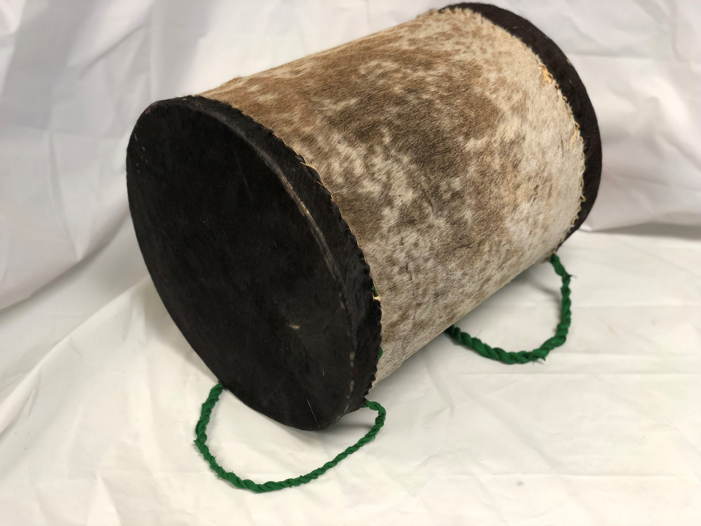
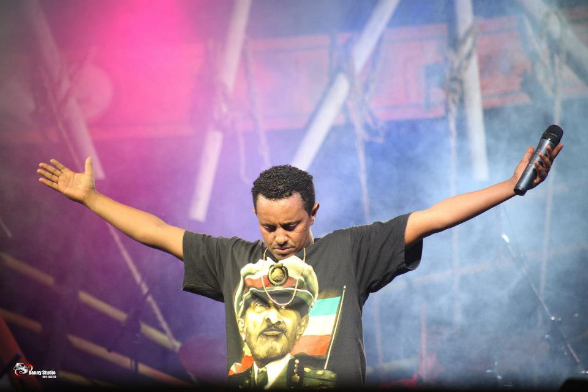

Ancestral Roots
Eskista, with its deep-rooted significance in Ethiopian culture, serves as a bridge connecting the present to the ancestral past, celebrating centuries-old traditions and stories.

Spiritual Significance
The dance embodies more than just physical movement; it is imbued with spiritual meaning, often performed in ceremonies and festivals to honor and invoke ancestral spirits.
Celebration of Ethiopian Identity
Eskista is a proud expression of Ethiopian identity, showcasing the rich cultural fabric of the nation through its unique rhythms, movements, and communal participation.
Global Recognition
As Eskista garners global attention, it serves as a cultural ambassador, showcasing the diversity and vibrancy of Ethiopian culture on the world stage.
